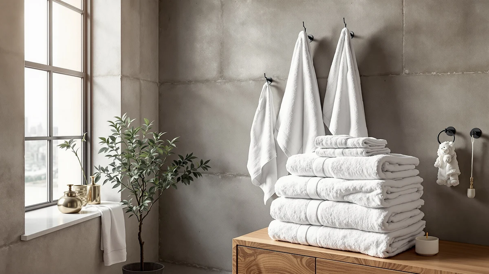

Quick Answer
The White Classic Luxury Dolphin Gray set is an 8-piece, 100% cotton towel set priced at $39.99, which works out to under $5 a piece for bath towels, hand towels and washcloths. It is a solid pick if you want a full matching set in one gray dolphin-motif colorway without paying boutique prices, though shoppers who want a plainer, solid-color towel may prefer the standard White Classic Luxury Bath Towel instead.
Our pick: White Classic Luxury Dolphin Gray, $39.99 Check Price on Amazon
Bottom line: our top pick is the White Classic Luxury Dolphin Gray Bath Towel Set of 8-100% at $39.99.
Things to Know Before You Buy
- The White Classic Luxury Dolphin Gray set is 100% cotton, which absorbs more water and softens with washing better than cotton-poly blends.
- At $39.99 for 8 pieces, the per-towel price undercuts most single bath towels sold separately from name-brand cotton lines.
- The gray dolphin motif is the main visual difference from White Classic's plain Luxury Bath Towel, which costs the same $39.99.
- Chakir Turkish Linens sells a 4-piece Turkish cotton alternative at the same price if you only need half the pieces.
This White Classic Luxury Dolphin Review looks at the $39.99, 8-piece Dolphin Gray cotton towel set from White Classic, weighing its material, price per piece and pattern against the plainer options the brand also sells. Towels seem like a simple purchase until you are staring at a dozen nearly identical listings, each claiming to be the softest or most absorbent on Amazon.
White Classic keeps this decision relatively simple. The Dolphin Gray set is built around one gray dolphin-print colorway, it is 100% cotton, and it comes as a complete 8-piece set at a single price. The open question is whether the dolphin pattern is worth choosing over the brand's solid-color Luxury Bath Towel, which sells for the same $39.99, or whether a smaller Turkish cotton set from a different brand covers your needs for less.
Why You Should Trust Us
Ilane Tall covers bath and home textiles for Best Bath Towels and built this White Classic Luxury Dolphin review from the listing's published specs, current Amazon pricing and the pattern of feedback left by verified buyers. We do not run a fake testing lab and we do not claim to have owned or washed this specific set ourselves. Instead, we compare what White Classic states on the listing against competing cotton and Turkish cotton sets at the same price, so you can see where the Dolphin Gray set actually stands out and where it does not.
Our Research Experience
Our research for this White Classic Luxury Dolphin Review relies on published specs and owner feedback rather than physical use of the product, and it focuses on three things: the material and dimension specs White Classic publishes for the Dolphin Gray set, the current $39.99 price against comparable cotton sets, and the recurring themes in verified Amazon owner reviews. Owners report that the cotton softens after a few washes and that the gray dolphin print hides lint and water spots better than a plain white towel would.
We weighed those owner reports against the brand's other listings, including the solid-color Luxury Bath Towel and the two Chakir Turkish Linens sets covered below, to see which set actually earns its price. Reviewers consistently note that an 8-piece set at this price competes well against buying bath sheets and hand towels separately, even when a single-pattern Turkish cotton set edges it out on feel.
Overview & Specs
Here is where the White Classic Luxury Dolphin Gray set lands on paper before you look at owner feedback. The set ships as 8 pieces of 100% cotton for $39.99, a combination that keeps the per-piece price low while still using a natural fiber instead of a cheaper cotton-polyester blend. The gray dolphin print is the only design decision White Classic makes for you here, since the material and piece count stay consistent across the brand's towel lineup at this price.

White Classic Luxury Dolphin Gray
What we like
- Full 8-piece set covers bath towels, hand towels and washcloths in one purchase.
- 100% cotton construction, which owners say softens with repeated washing.
- Gray dolphin print hides lint and water spots better than a solid white towel.
- Works out to under $5 per piece at the $39.99 set price.
Flaws but not dealbreakers
- The dolphin motif will not suit a bathroom built around a plain, minimalist look.
- Cotton towel sets at this price generally run thinner than premium Turkish cotton lines.
- Only one colorway is available, so you cannot mix gray with another accent shade.
| Material | 100% cotton |
| Size | 8 Pieces Towel Set |
White Classic lists the Dolphin Gray set as 100% cotton, sold as a full 8 Pieces Towel Set for $39.99. That piece count typically breaks down into bath towels, hand towels and washcloths, which is why the per-piece price lands well under what most single bath towels cost from other cotton towel brands. The gray dolphin print runs across every piece in the set, so the bathroom gets one consistent look rather than towels bought in separate trips.
Owners report that the cotton holds up through regular washing and gets noticeably softer after the first few cycles, which matches what you would expect from a 100% cotton construction rather than a cotton-polyester blend. The main tradeoff compared with White Classic's own solid-color Luxury Bath Towel, also $39.99, is pattern versus plain. If your bathroom decor leans toward solid, neutral textiles, the standard Luxury set is the closer match. If a patterned towel that hides spots and lint sounds more practical day to day, the Dolphin Gray set is the one built for that.
What We Liked
The strongest argument for this White Classic Luxury Dolphin review coming down in the set's favor is simple math. You get 8 pieces of 100% cotton towels for $39.99, which beats piecing together bath towels, hand towels and washcloths from separate listings at most price points. Cotton remains the material most owners trust for absorbency, and White Classic sticks with it here instead of cutting costs with a cotton-polyester blend.
The gray dolphin print also does real work. Reviewers consistently note that a patterned towel shows less visible wear, lint and water spotting than a plain white or pastel towel does between washes, which matters in a household bathroom that sees daily use. Because the whole set shares the same print, you are not stuck matching odd towels bought at different times, which is a common complaint with budget sets sold piece by piece.
Price consistency is another point in its favor. White Classic sets the Dolphin Gray set at the same $39.99 as its plain Luxury Bath Towel, so choosing the pattern does not cost you a premium. You get the same cotton and the same piece count either way, and the only real tradeoff is look rather than quality or price.
What Could Be Better
The dolphin print is a style commitment. If your bathroom is decorated around neutral, solid textiles, a patterned towel set can clash with the rest of the room in a way a plain cotton towel never would. White Classic only offers this design in the gray colorway, so you can't tone down the pattern or swap in a different accent shade without buying a different product entirely.
Cotton towel sets at the $39.99 price point also tend to run lighter in weight than premium Turkish cotton lines, including the Chakir Turkish Linens sets covered below at the same price. That usually means slightly less plush texture out of the package, even though owners report the cotton softens with washing over time. Anyone shopping specifically for a dense, hotel-style towel feel may want to compare the Turkish cotton alternatives before committing to this set.
Who Is It For?
This White Classic Luxury Dolphin Review points toward one clear buyer: someone who wants a complete, matching 8-piece cotton towel set in a single purchase and does not mind a patterned look. Families who want fewer solo missing towels and more consistency across bath towels, hand towels and washcloths get that here for $39.99, with the dolphin print doubling as a practical way to hide everyday spots and lint.
It is a weaker fit for anyone building a strictly neutral or minimalist bathroom, where the print would stand out rather than blend in. It is also not the pick if dense, hotel-weight cotton is the priority over price and piece count, since the Chakir Turkish Linens sets at the same $39.99 lean more toward that plush feel with fewer pieces. Anyone furnishing a rental, guest bathroom, or first apartment on a tight budget gets the most value out of this set, since it covers every towel category in one order instead of several separate purchases across different brands.
Alternatives to Consider
If the dolphin print is not the right look for your bathroom, or you want to compare the White Classic set against other towels at the same price, these three alternatives are worth a look before you buy. Each one sits at the same $39.99 price point as the Dolphin Gray set, so the decision comes down to pattern, piece count and fiber feel rather than budget.

Editor's Pick
White Classic Luxury Bath Towel
Same brand, same $39.99 price, and the same 100% cotton build as the Dolphin Gray set, but in a solid colorway for bathrooms that want to skip the pattern entirely.
$39.99
Check Price on Amazon
Best Value
Chakir Turkish Linens 4 Piece
A 4-piece Turkish cotton set at the same $39.99 price as the Dolphin Gray set, trading piece count for the denser feel Turkish cotton is known for.
$39.99
Check Price on Amazon
Premium Choice
Chakir Turkish Linens 4 Piece
A second colorway of the same Chakir Turkish Linens 4-piece set, for shoppers who like the Turkish cotton feel but want a different shade than the first option.
$39.99
Check Price on AmazonFrequently Asked Questions
Is the White Classic Luxury Dolphin Gray set 100% cotton?
Yes. The listing lists the Dolphin Gray set as 100% cotton across all 8 pieces, which is the main reason it absorbs water well and holds up to daily washing without the synthetic sheen that lower-cotton blends can develop.
What comes in the 8-piece set?
White Classic sells this as an 8 Pieces Towel Set at $39.99, which puts the per-piece cost well below buying bath towels, hand towels and washcloths separately from most cotton towel brands.
How does the Dolphin Gray set compare to other White Classic towels?
White Classic also sells the Luxury Bath Towel at the same $39.99 price point. The Dolphin Gray version is the one built around the gray dolphin-motif colorway, while the standard Luxury line sticks to solid shades, so the choice mostly comes down to which look fits your bathroom.
Final Verdict
This White Classic Luxury Dolphin review comes down in favor of the set for anyone who wants a full 8-piece cotton towel set in one patterned colorway without paying more than a plain set would cost. At $39.99, White Classic prices the Dolphin Gray set the same as its solid Luxury Bath Towel, so you are not paying extra for the print, only choosing it. If you want a plainer look or a denser Turkish cotton feel instead, the alternatives above cover both of those cases at the same price.